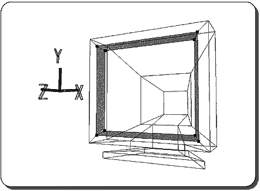
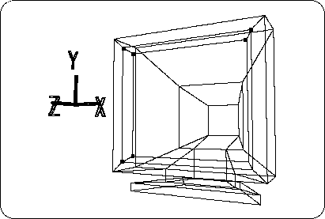
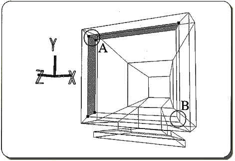
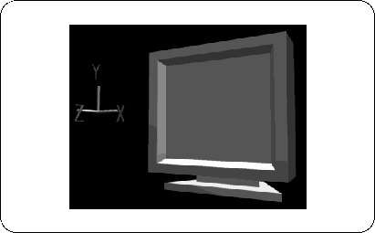

Return to previous page | Return to menu | Go to next page
This time, I will color the fine parts.
Now the entire object is highlighted in pink, but first remove it.
Place the cursor on any window and press Middle Mouse . The pink highlight disappears. (If it doesn't disappear,
[Polygon] → [Select Mode by tag vert]
Please select and try again. )
Also, take all TAGs (enclose with "T" key + middle mouse button drag).
Next, highlight the frame of the screen.
First, set the points (8 points) on the frame of the screen to TAG ( "T" key + left mouse button drag around) (Figure 4-3).

Place any cursor in any window and press left mouse button .
Oh? Not only the frame of the screen but also the monitor screen itself is highlighted.
If you look closely, as a result, the polygon of the screen was also surrounded by TAG.
In this case, you can highlight it in two steps.
First, please undo because it failed ( "U" key + left mouse button ).
Then, set the points (six points) shown in the figure below to TAG (Figure 4-4).

Place the cursor in the window and press left mouse button .
It should be highlighted as shown below (Figure 4-5).

In this state, remove the TAG (2 points) at location A ( "T" key + middle mouse button ).
Next, change the location of B to TAG (2 points).
Then place the cursor in the window again and press left mouse button .
This should highlight only the frame of the screen.
If you can specify, remove all TAGs. Currently, only the border highlights should be displayed.
Where
[Polygon] → [Assign New Material]
Select and color again. The settings here are as follows.
1) Set “Phong” to “Lambert”.
2) Enter R: 0.78, G: 0.78, B: 0.78.
3) Set “Diffuse” and “Ambient” to the same value.
4) The name can be “SNN”.
Only in the case of [Assign New Material], even if an existing material name is given, a different name is automatically assigned. For example, in this case, it should have been renamed to “SNN2” (however, after renaming the name once it has been given, a Warning display will appear and you will be prompted to change the name).

Now, try pressing the Middle Mouse Button to remove the highlight from the screen frame.
However, the highlight will not disappear. This function is only available for polygons surrounded by TAG, so it cannot be used now.
Here, it is troublesome to do TAG again, so let's use another function.
[Polygon] → [Unselect all]
please choose. The highlight should now disappear.